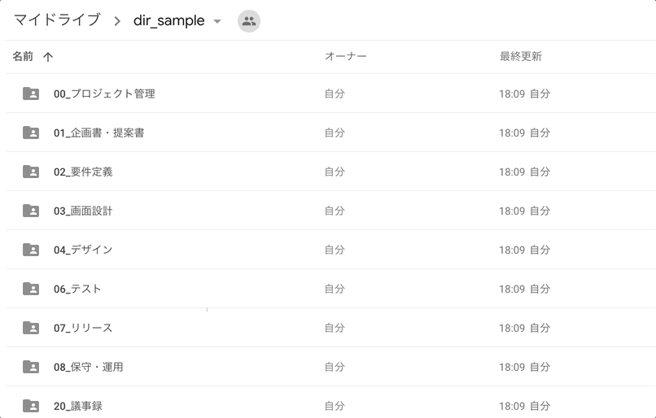

すばらしきショートカットの世界
Tomoki Komatsu
本日のお話
- ショートカットのメリット
- おすすめショートカット
自己紹介
ともぞうチームでリーダーやっています。Webディレクターです。
ショートカットのメリットの前に
ある人はいいました
ショートカットを使えるということが、PCを操作できるということだ
これは前職の社長が言ってたことなので、格言でもなんでもないです
ショートカットのメリット
- まじで作業が早くなる is 給料あがる
- キーボードから手を離さないでもいい is 手が疲れにくい
- ちょっとかっこいい
おすすめショートカット
Emacsのキーバインド
macOSだとEmacsのキーバインドでキャレットの操作が可能
キーバインド
- control + f・・・キャレットを前に移動
- control + b・・・キャレットを後ろに移動
- control + a・・・キャレットを一番後ろに移動
- control + p・・・キャレットを一行前に移動
- control + n・・・キャレットを一行後ろに移動
- control + d・・・backsapace
- control + h・・・delete
- control + k・・・1行削除
- control + y・・・1行削除したものをペースト
これで矢印キーへの移動が不要になります
j,k
みんなご存知Vimのキーバインド
ChatWork, Googleドライブ, Gmailで上下移動が可能
ウィンドウサイズ
MagnetかSpectacleというアプリをいれてグイングインさせます

おまけ
VimiumっていうChrome extensionいれるとキーボードだけでブラウザ操作できるよ
https://chrome.google.com/webstore/detail/vimium/dbepggeogbaibhgnhhndojpepiihcmeb?hl=ja